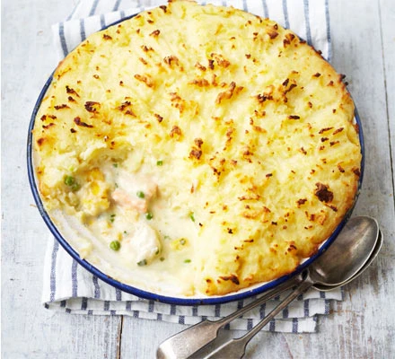

Fish Pie Recipe

A family favourite which is perfect for a quick midweek meal
Take the fuss out of midweek cooking with this healthy take on the classic fish pie.
With simple ingredients you can find in your local supermarket and a bit of time in the oven, treat yourself and your family to this luscious dish. Incorporating healthy fish and veg with a bit of milk, it's sure to please even the most picky of palettes!
Ingredients
- 1kg Maris Piper potatoes, peeled and halved
- 400ml milk, plus a splash
- 25g butter, plus a knob
- 25g plain flour
- 4 spring onions, finely sliced
- 1 x pack fish pie mix (cod, salmon, smoked haddock etc, weight around 320g-400g depending on pack size)
- 1 tsp Dijon or English mustard
- ½ a 25g pack or a small bunch chives, finely snipped
- 1 handful frozen petits pois
- 1 handful grated cheddar
- 1 leek, chopped and washed
Steps
- Heat the oven to 200C/fan 180C/gas mark 6.
- Put 1kg potatoes, peeled and halved, in a saucepan and pour over enough water to cover them. Bring to the boil and then simmer until tender.
- When cooked, drain thoroughly and mash with a splash of milk and a knob of butter. Season with ground black pepper.
- Put 25g butter, 25g plain flour and 4 finely sliced spring onions in another pan and heat gently until the butter has melted, stirring regularly. Cook for 1-2 mins.
- Gradually whisk in 400ml milk using a balloon whisk if you have one. Bring to the boil, stirring to avoid any lumps and sticking at the bottom of the pan. Cook for 3-4 mins until thickened
- Take off the heat and stir in 320g-400g mixed fish, 1 tsp Dijon or English mustard, a small bunch of finely snipped chives, the leek and handful of petits pois. Spoon into an ovenproof dish or 6-8 ramekins.
- Spoon the potato on top and sprinkle with a handful of grated cheddar cheese.
- Pop in the oven for 20-25 mins or until golden and bubbling at the edges. Alternatively, cover and freeze the pie or mini pies for another time.